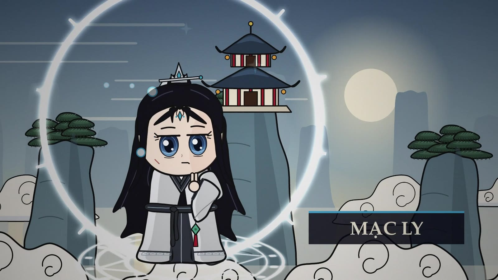
Nhân vật chính
Mạc Ly
Con thợ đá Hạ Cốc, bia trống. Ít nói, lì, nhớ dai… cho tới khi bắt đầu quên.
Trời khắc sẵn số mệnh của mỗi người lên bia đá.
Cậu sinh ra với một tấm bia trống.
Ở Vân Châu, trời khắc sẵn số mệnh của mỗi người lên một tấm bia đá. Năm mười hai tuổi, đứa trẻ nào cũng đặt tay lên Bia Mệnh giữa sân đình: trên đá hiện ra một con số là số năm được sống, và một chữ cho biết tư chất: Thượng, Trung hay Hạ.
Trên biển mây là các tông môn tu tiên. Dưới biển mây là Hạ Cốc, nơi những đứa trẻ Hạ phẩm đập đá và trồng lúa tới già.
Mạc Ly, thằng nhóc đập đá ở lò gạch nhà bà Cả, đặt tay lên bia… và tấm bia trống trơn.
Không mệnh. Không ai dạy. Muốn tu, cậu phải tự khắc từng nét lên bia của chính mình. Và mỗi nét khắc đổi lấy một ký ức.
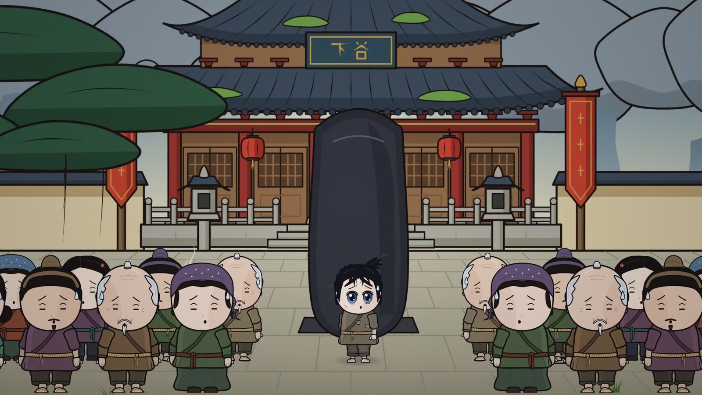
Một lớp mây dày vĩnh viễn chia đôi thế giới. Trên mây là những đỉnh núi đá vươn cao như kim, linh khí rơi xuống như sương. Dưới mây là thung lũng ẩm, quanh năm thiếu nắng.
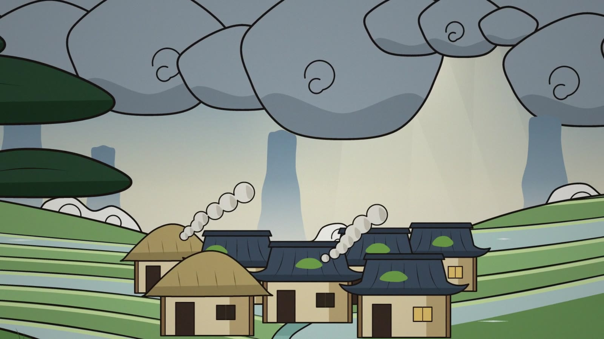
Ruộng bậc thang xám, mái nhà rêu xanh, biển mây úp xuống như cái nắp nồi khổng lồ. Nắng ít khi xuống được tới đây.
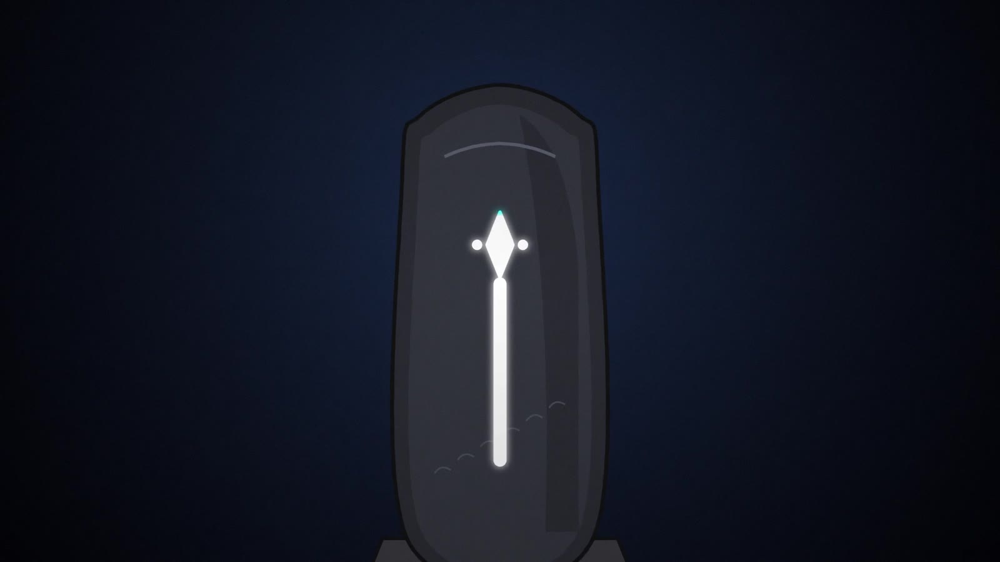
Tấm bia đá đen cao gấp ba người giữa sân đình. Người Hạ Cốc tin rằng chữ trên bia là lời của Trời.
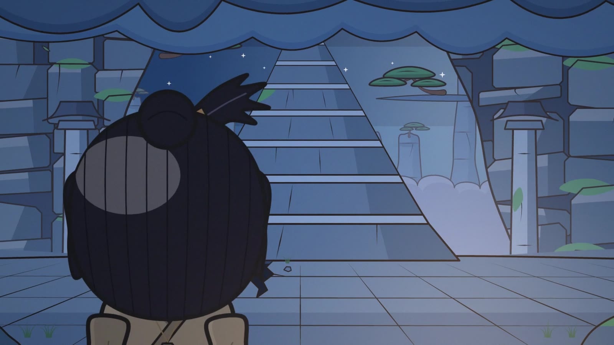
Hàng trăm năm mới có một đứa trẻ mà bia không hiện gì. Tông môn có lệnh đưa chúng lên núi. Không ai thấy chúng quay về.
Người có mệnh tu bằng cách hút linh khí, theo con đường trời đã khắc. Mạc Ly không có mệnh, nên phải tự khắc từng nét. Mỗi nét mở thêm một tầng sức mạnh, và xoá đi một ký ức: một khuôn mặt, một mùi hương, một cái tên.

Con thợ đá Hạ Cốc, bia trống. Ít nói, lì, nhớ dai… cho tới khi bắt đầu quên.
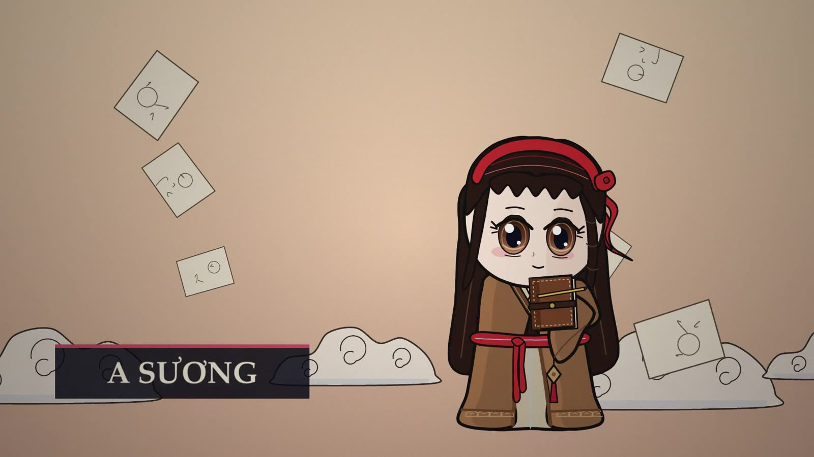
Cô bé không nói được, vẽ giỏi nhất vùng. Cuốn sổ bìa da lật trang nào cũng thấy Mạc Ly.
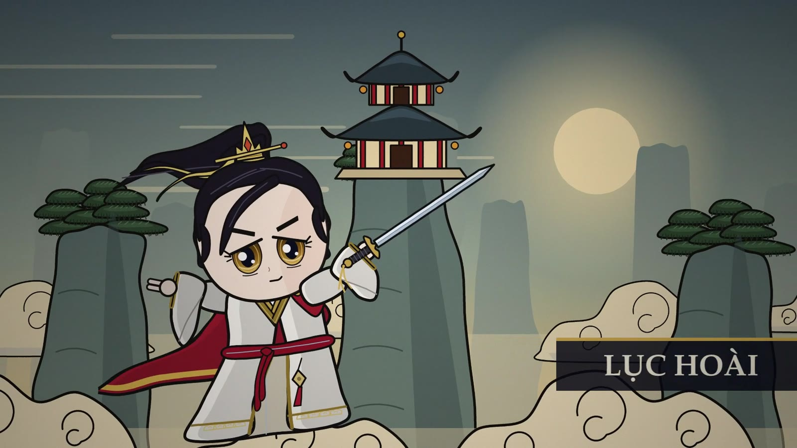
Thiên tài Thượng phẩm của Thanh Lộ Tông, bằng tuổi Mạc Ly. Kiêu, nhưng không ác.
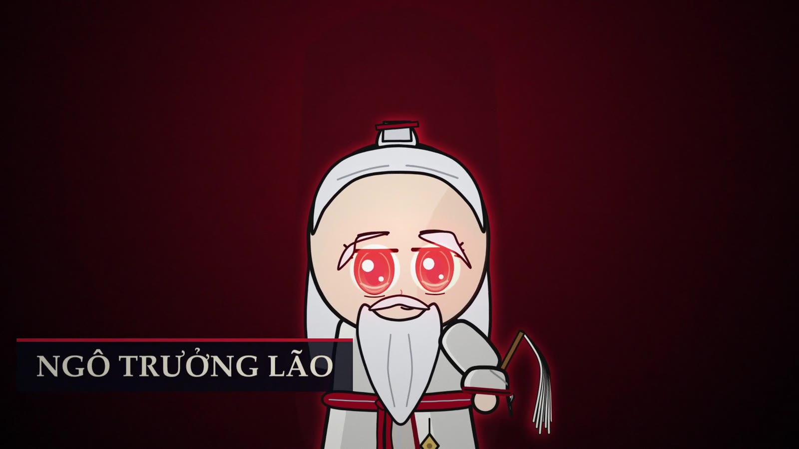
Người đi khắp Hạ Cốc chọn trẻ lên núi. Lịch sự, nhẹ nhàng, đáng sợ.
Ba mảng kể cùng một thế giới, cùng một mạch truyện. Bạn thích đọc chữ, xem tranh hay xem phim đều theo được Mạc Ly.
Bản đầy đủ nhất của câu chuyện, ra đều từng chương. Những chi tiết, những manh mối mà phim không kịp kể.
Đọc chương 1 →Chuyển thể theo phong cách manhua, từng khung tranh cho những khoảnh khắc đẹp nhất của Vân Châu.
Xem truyện tranh →Toàn bộ phần hoạt hình được dựng trong bộ công cụ ArtCraft: nền và nhân vật vẽ vector nhiều lớp, chuyển động và ánh sáng trong EffectCraft, âm thanh trong SoundCraft, ghép phim trong FilmCraft. Đây là ảnh chụp các project thật của tập 1.
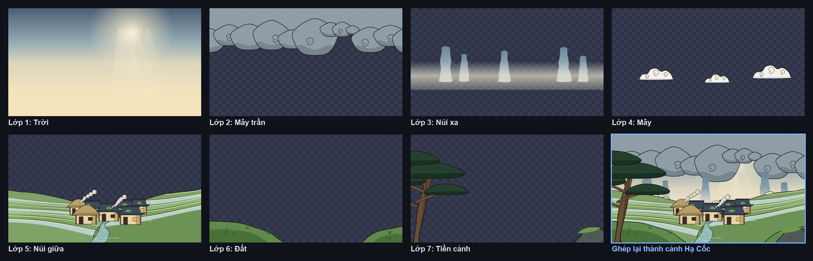
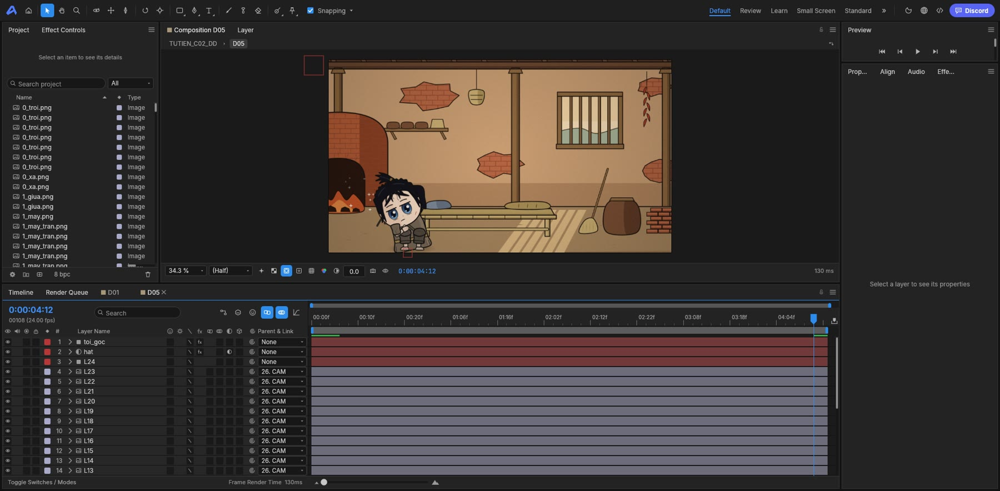
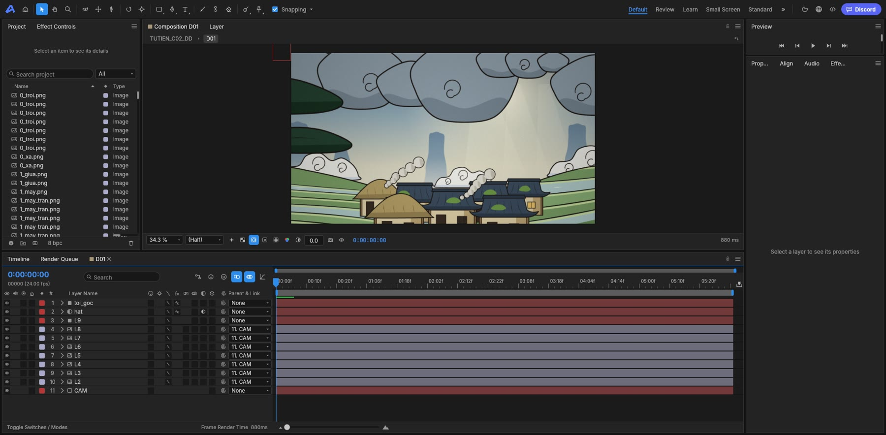
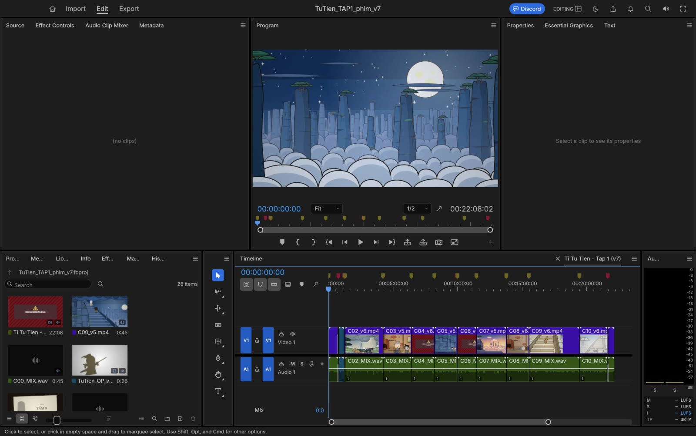
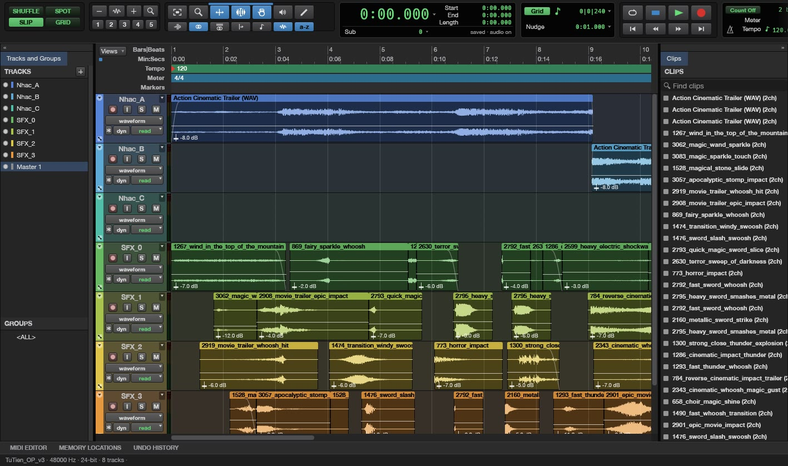
Vô Mệnh Nhân là dự án của một nhóm nhỏ, làm ngoài giờ, chưa có nhà tài trợ. Nếu bạn muốn góp sức, hãy nhắn cho bọn mình.
Cùng vẽ truyện tranh chuyển thể, giữ chất tu tiên Trung Hoa.
Giọng cho Mạc Ly, Lục Hoài, Ngô Trưởng Lão và các vai Hạ Cốc.
Nhạc nền riêng cho Vân Châu, hiệu ứng, dựng hình chuyển động.
Giúp dự án đi nhanh hơn và đẹp hơn. Liên hệ để trao đổi cụ thể.